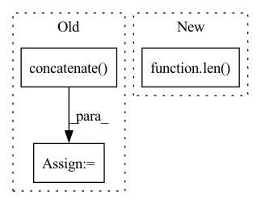

Pattern ID :12254
Before Change
gr_truth_epoch = gr_truth
else:
pred_epoch = np.concatenate((pred_epoch, pred), axis = 0)
gr_truth_epoch = np.concatenate( (gr_truth_epoch, gr_truth), axis = 0)
//the following line to empty the cache is helpful in order to
//reduce memory usage and avoid OOM error:
torch.cuda.empty_cache()After Change
//Initialize numpy arrays for storing results. examples x labels
//Do NOT use concatenation, or else you will have memory fragmentation.
num_examples = len(dataloader.dataset)
num_labels = len( self.label_meanings)
pred_epoch = np.zeros([num_examples,num_labels])
gr_truth_epoch = np.zeros([num_examples,num_labels])
for batch_idx, batch in enumerate(dataloader):In pattern: SUPERPATTERN
Frequency: 5
Non-data size: 3
Instances Fragment ID: 41564185
Project Name: rachellea/pytorch-computer-vision
Commit Name: 92145aa25950504dbfaa3ac7ff86ddbeaa66a63f
Time: 2021-01-23
Author: rachel.draelos@gmail.com
File Name: src/run_experiment.py
M Class Name: DoExperiment
N Class Name: DoExperiment
M Method Name: iterate_through_batches(5)
N Method Name: iterate_through_batches(5)
M Parent Class: object
N Parent Class: object
M File Name: src/run_experiment.py
N File Name: src/run_experiment.py
M Start Line: 261
M End Line: 300
N Start Line: 263
N End Line: 300
Before Change
new_data = {}
for key, value in data.items():
if key == self.target_iid_field:
new_data[key] = np.concatenate( [value, neg_iids])
else:
new_data[key] = np.concatenate([value] * self.times)
pos_len = len(data[self.target_iid_field])
total_len = len(new_data[self.target_iid_field])After Change
return new_data
def _neg_sample_by_point_wise_sampling(self, data, neg_iids):
pos_inter_num = len( data)
new_data = data.repeat(self.times)
new_data[self.iid_field][pos_inter_num:] = neg_iids
labels = torch.zeros(pos_inter_num * self.times)
labels[: pos_inter_num] = 1.0 Fragment ID: 41564206
Project Name: rucaibox/recbole
Commit Name: 03922da139b2a8c758f07f98804e43f8f2003d8b
Time: 2020-11-30
Author: 297086016@qq.com
File Name: recbole/data/dataloader/sequential_dataloader.py
M Class Name: SequentialNegSampleDataLoader
N Class Name: SequentialNegSampleDataLoader
M Method Name: _neg_sample_by_point_wise_sampling(3)
N Method Name: _neg_sample_by_point_wise_sampling(3)
M Parent Class: NegSampleByMixin,SequentialDataLoader
N Parent Class: NegSampleByMixin,SequentialDataLoader
M File Name: recbole/data/dataloader/sequential_dataloader.py
N File Name: recbole/data/dataloader/sequential_dataloader.py
M Start Line: 211
M End Line: 220
N Start Line: 205
N End Line: 210
Before Change
labels = [[item[1]] for item in batch]
values = np.concatenate(values, axis=0).astype(_DTYPE)
values = torch.from_numpy(values)
labels = np.concatenate( labels, axis=0) .astype(_DTYPE)
labels = torch.from_numpy(labels)
return values, labels
After Change
the concatenated values to feed into neural networks
try:
n_fields = len( batch[0])
except:
raise ValueError("No data")
ret = []
for i in range(n_fields): Fragment ID: 41564207
Project Name: deeppsp/torch_ecg
Commit Name: ee05a1edb7783d4928b0eea028455c71eb1fe050
Time: 2021-10-14
Author: wenh06@gmail.com
File Name: torch_ecg/utils/utils_nn.py
M Class Name: AnonimousClass
N Class Name: AnonimousClass
M Method Name: default_collate_fn(1)
N Method Name: default_collate_fn(1)
M Parent Class:
N Parent Class:
M File Name: torch_ecg/utils/utils_nn.py
N File Name: torch_ecg/utils/utils_nn.py
M Start Line: 515
M End Line: 521
N Start Line: 513
N End Line: 523
Before Change
src_dataset = ConcatDataset(src_datasets)
tgt_dataset = ConcatDataset(tgt_datasets)
src_sizes = np.concatenate([ds.sizes for ds in src_datasets])
tgt_sizes = np.concatenate( [ds.sizes for ds in tgt_datasets])
self.datasets[split] = LanguagePairDataset(
src_dataset, src_sizes, self.src_dict,
tgt_dataset, tgt_sizes, self.tgt_dict,After Change
if len(src_datasets) == 1:
src_dataset, tgt_dataset = src_datasets[0], tgt_datasets[0]
else:
sample_ratios = [1] * len( src_datasets)
sample_ratios[0] = self.args.upsample_primary
src_dataset = ConcatDataset(src_datasets, sample_ratios)
tgt_dataset = ConcatDataset(tgt_datasets, sample_ratios)
Fragment ID: 41564189
Project Name: kssteven418/i-bert
Commit Name: 8eb232ce150d1afb44880a7078eb4abbae60dc32
Time: 2018-11-07
Author: myleott@fb.com
File Name: fairseq/tasks/translation.py
M Class Name: TranslationTask
N Class Name: TranslationTask
M Method Name: load_dataset(3)
N Method Name: load_dataset(3)
M Parent Class: FairseqTask
N Parent Class: FairseqTask
M File Name: fairseq/tasks/translation.py
N File Name: fairseq/tasks/translation.py
M Start Line: 118
M End Line: 164
N Start Line: 118
N End Line: 159
Before Change
stack_i.append(img_rescale.reshape((1,) + img_rescale.shape))
stack_i = np.concatenate(stack_i, axis=0)
images_rescale.append(stack_i.reshape((1,) + stack_i.shape))
images_rescale = np.concatenate( images_rescale, axis=0)
return images_rescale
After Change
Returns:
list: Rescaled images, each sample in the list in shape (n_phases, dim1 * scale, dim2 * scale).
n_samples = len( images)
// n_phases = images.shape[:2]
images_rescale = []
for i in range(n_samples):
stack_i = [] Fragment ID: 41564210
Project Name: pykale/pykale
Commit Name: f3d42e34835d87e861195bfb148551adac0337cf
Time: 2022-04-08
Author: szhou20@sheffield.ac.uk
File Name: kale/prepdata/image_transform.py
M Class Name: AnonimousClass
N Class Name: AnonimousClass
M Method Name: rescale_img_stack(2)
N Method Name: rescale_img_stack(2)
M Parent Class:
N Parent Class:
M File Name: kale/prepdata/image_transform.py
N File Name: kale/prepdata/image_transform.py
M Start Line: 146
M End Line: 157
N Start Line: 144
N End Line: 156